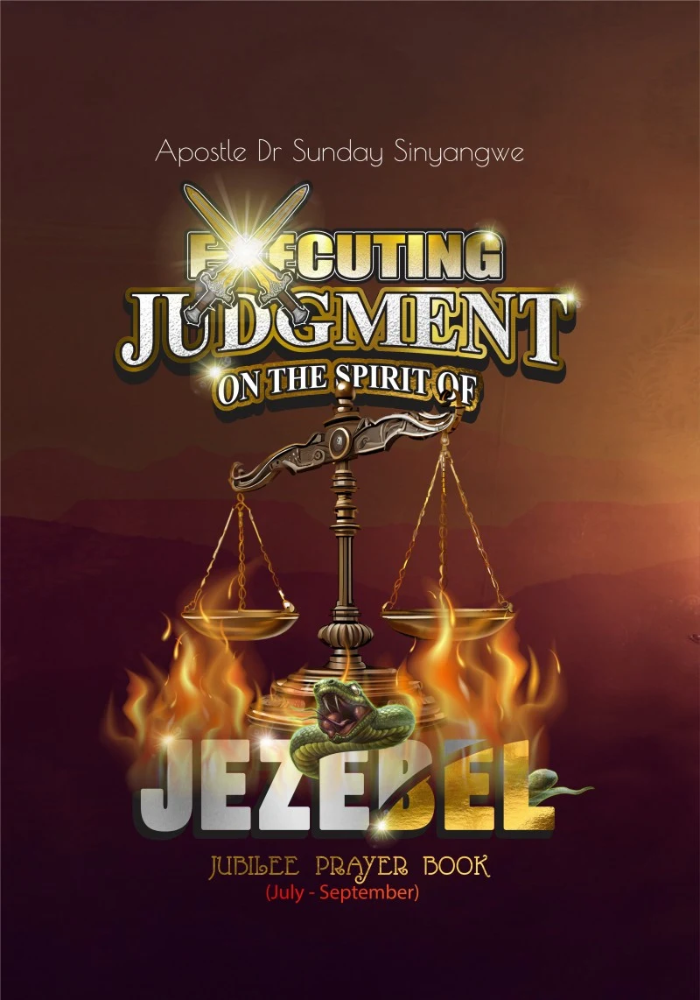
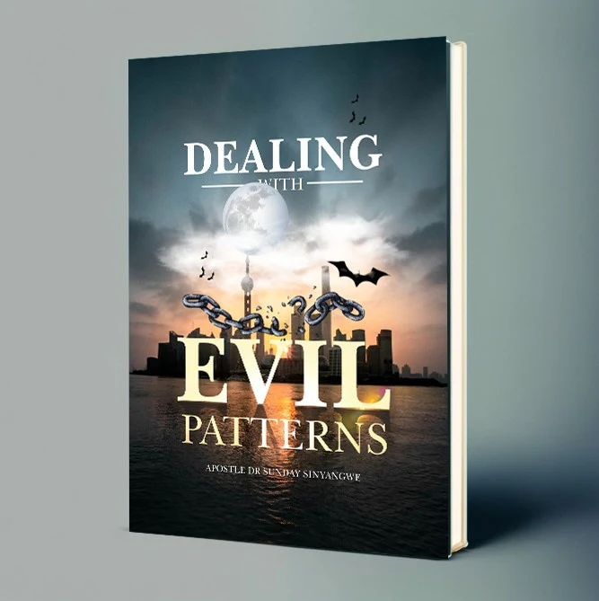

Sermon library & publications
Messages that
anchor the soul.
Full Sunday and midweek services, monthly 7-hour healing and deliverance encounters, prophetic prayer vigils, worship encounters, and published books from Apostle Dr. Sunday Sinyangwe and Pastor Bupe Sinyangwe.
Power of God — Part 2
When the Word of Christ is preached through a sanctified vessel, the Holy Spirit confirms it with salvation, healing, and deliverance. In this teaching from the main auditorium in Lusaka, Apostle Sunday Sinyangwe calls believers to walk in purity and demonstrate the living power of God.
Watch & grow
Find a word for your season.
Filter by the kind of message you need. Every message is available on our YouTube channel.
55 messages in library


Latest across our channels
Shalom Library & Standing In The Gap
Books & prayer manuals.
Published devotionals, spiritual warfare manuals, and quarterly Jubilee Prayer Books authored by Apostle Dr. Sunday Sinyangwe and Pastor Bupe Sinyangwe.
Featured daily devotional · ISBN 978-9982-50-107-9
Everyday With The Holy Spirit
Co-authored by Apostle Dr. Sunday Sinyangwe and Pastor Bupe Sinyangwe, this daily devotional introduces believers to deep, practical fellowship with the Person of the Holy Spirit. Written to enlarge your revelational capacity in the Word and prayer, every daily reading equips you to commune with the Spirit and walk in supernatural victory.
- Daily theme & anchor Scripture
- Word encounter & revelational teaching
- Targeted daily prayer points
- “Proclaim It” faith confession
- Structured daily Bible reading plan
- Published by Shalom Embassy & Standing In The Gap
Available as an instant digital download on Selar and in print at the Shalom Embassy bookshop in Lusaka.

Quarterly & annual prayer manual
Jubilee Prayer Book Series
The family daily devotion and spiritual warfare guide of Shalom Embassy and the Standing In The Gap prayer network—including Executing Judgment on the Spirit of Jezebel and quarterly editions. Each day provides a Prayer Focus, Power Point, Scriptures to Stand On, Devotion, Declaration of the Day, and Prayer Points.

Deliverance & spiritual warfare
Dealing With Evil Patterns
A scriptural manual on identifying, confronting, and breaking recurring generational cycles, ungodly covenants, and stubborn patterns that resist progress in families and destinies—enforcing total liberty through the blood of Jesus and the anointing of the Holy Ghost.
Intercession · ISBN 978-9982-51-209-1
The Year of Keeping The Fire Burning
Published in Lusaka by the Standing In The Gap Team, this 73-page prayer and consecration volume equips watchmen and intercessors to guard their personal altar, contend for national revival, and keep the fire of the Holy Spirit burning without compromise.

Co-Author & President of Virtuous Women Ministry
Pastor Bupe Lumbwa Sinyangwe
Co-author of Everyday With The Holy Spirit and visionary founder of the Virtuous Women Ministry—one of the largest women's ministries in Zambia, raising a Spirit-filled army of watchmen and equipping every woman to reach her God-given potential. Alongside teaching the Word at Shalom Embassy Headquarters, she leads outreach to vulnerable women and girls and supports church planting across rural communities in Zambia.
Shalom TV
The Word never stops.
Every Sunday gathering, Night of Solution, and special encounter is streamed for the family scattered across the nations. Subscribe and turn on notifications so you never miss a word.
1,500+
Messages archived
294K+
Online family
Better together
Don't just watch. Belong.
Messages are a gift, but transformation happens in the family. Join us in person this Sunday.